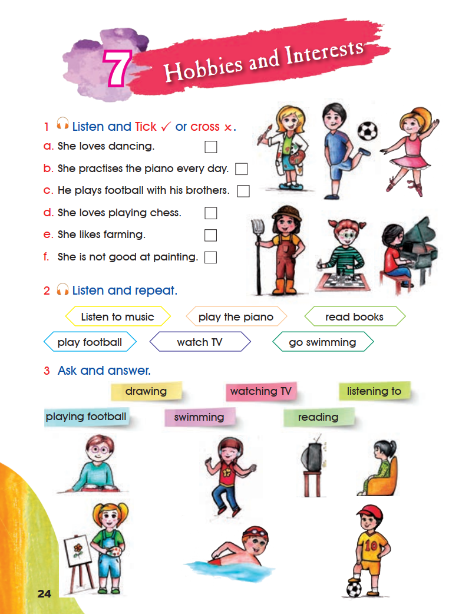
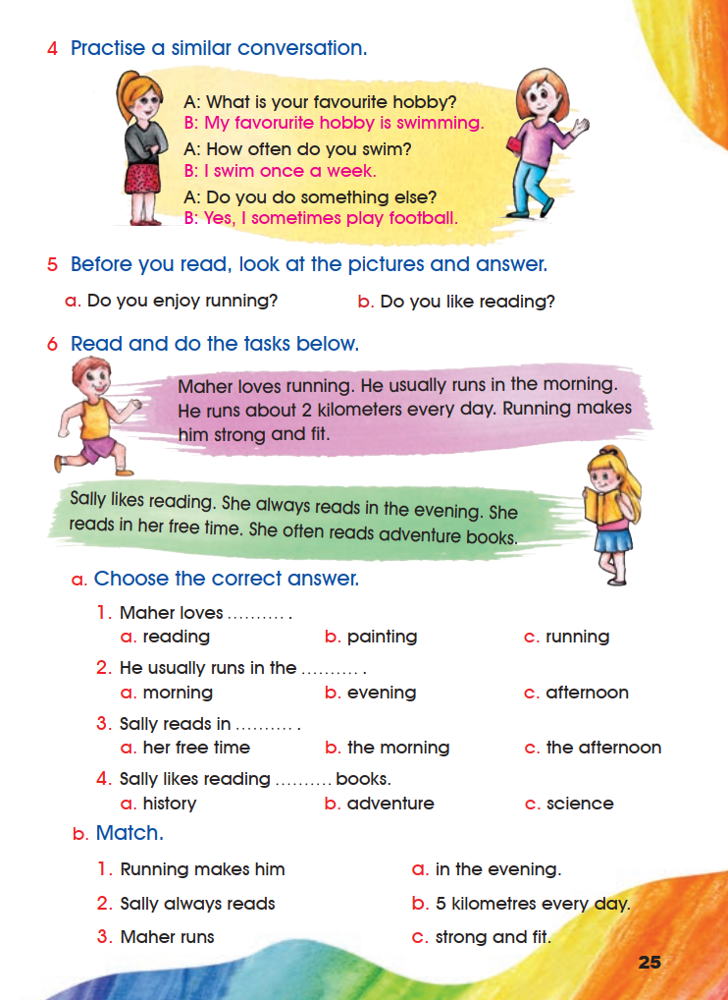
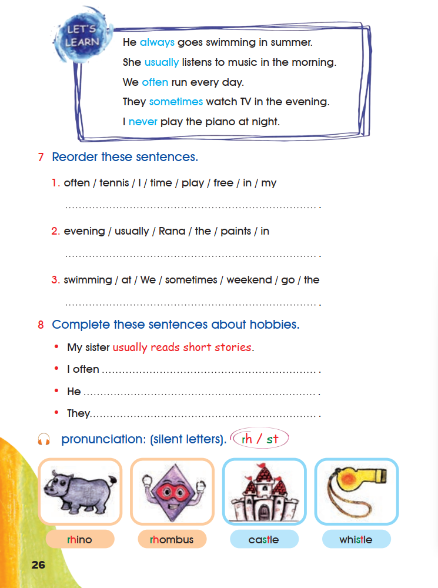

Pupil’s Book · Hobbies and Interests
Every printed exercise is shown beside its original byte-preserved scan and an accessible transcription. No audio was supplied, so listening tasks stay unavailable for verification; inferred and illustrative answers are labelled.
Pupil’s Book page 24 · listening, repeated phrases and picture labels

Accessible transcription
7 Hobbies and Interests 1 Listen and tick ✓ or cross ×. a. She loves dancing. b. She practises the piano every day. c. He plays football with his brothers. d. She loves playing chess. e. She likes farming. f. She is not good at painting. 2 Listen and repeat. listen to music / play the piano / read books play football / watch TV / go swimming 3 Ask and answer. drawing / watching TV / listening to / playing football / swimming / reading Illustrations: boy with an open book; child with headphones; television and viewer in an armchair; girl at an easel; swimmer; footballer. 24
Source-faithful study notes
Printed language: the six phrase cards and six activity labels are quoted above exactly. Audio-dependent: exercise 1 cannot be verified without the recording; the empty printed boxes remain empty here.
Image-derived note: the boy with an open book supports reading; the television and the viewer are one watching TV activity. This is an inference from the printed illustration, not an official key.
Pupil’s Book page 25 · conversation and two reading passages

Accessible transcription
4 Practise a similar conversation. A: What is your favourite hobby? B: My favourite hobby is swimming. A: How often do you swim? B: I swim once a week. A: Do you do something else? B: Yes, I sometimes play football. 5 Before you read, look at the pictures and answer. a. Do you enjoy running? b. Do you like reading? 6 Read and do the tasks below. Maher loves running. He usually runs in the morning. He runs about 2 kilometres every day. Running makes him strong and fit. Sally likes reading. She always reads in the evening. She reads in her free time. She often reads adventure books. a. Choose the correct answer. 1. Maher loves ... reading / painting / running 2. He usually runs in the ... morning / evening / afternoon 3. Sally reads in ... her free time / the morning / the afternoon 4. Sally likes reading ... books. history / adventure / science b. Match. 1. Running makes him a. in the evening. 2. Sally always reads b. 5 kilometres every day. 3. Maher runs c. strong and fit. 25
Source-faithful study notes
Printed passages: both short passages and all printed questions and options are reproduced in the transcription. Source-derived answers (not a printed key): 6a = 1c running, 2a morning, 3a her free time, 4b adventure; 6b = 1c strong and fit, 2a in the evening. The 6b item containing “5 kilometres every day” is deliberately excluded because it conflicts with the passage.
Speaking/open: exercise 4 is a printed conversation to practise; exercise 5 asks personal questions. Neither is scored.
Pupil’s Book page 26 · frequency, sentence writing and silent letters

Accessible transcription
Let’s learn He always goes swimming in summer. She usually listens to music in the morning. We often run every day. They sometimes watch TV in the evening. I never play the piano at night. 7 Reorder these sentences. 1. often / tennis / I / time / play / free / in / my 2. evening / usually / Rana / the / paints / in 3. swimming / at / We / sometimes / weekend / go / the 8 Complete these sentences about hobbies. • My sister usually reads short stories. • I often ............................................... • He ............................................... • They ............................................... pronunciation: (silent letters). rh / st rhino / rhombus / castle / whistle 26
Source-faithful study notes
Exercise 7 · Reorder three sentences
Inferred from the printed word tiles; not an official printed answer key.
Show inferred sentence order (comparison only)
Exercise 8 · Complete three hobby sentences
Open/personal: illustrative examples only; answers vary.